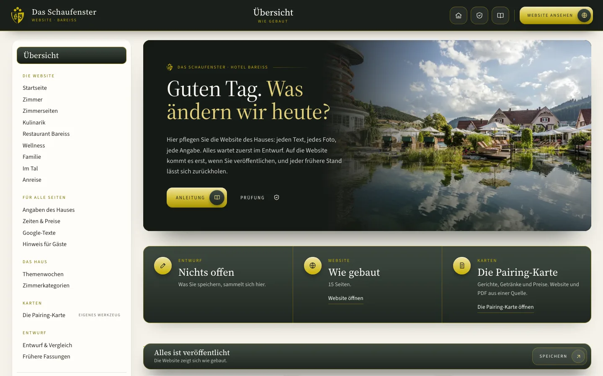
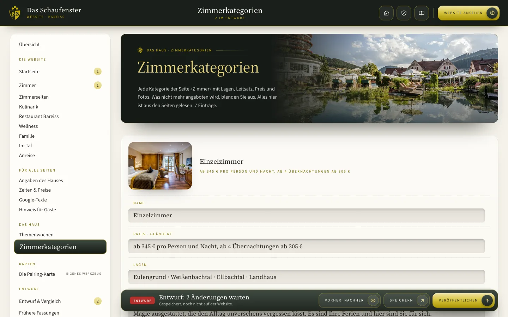
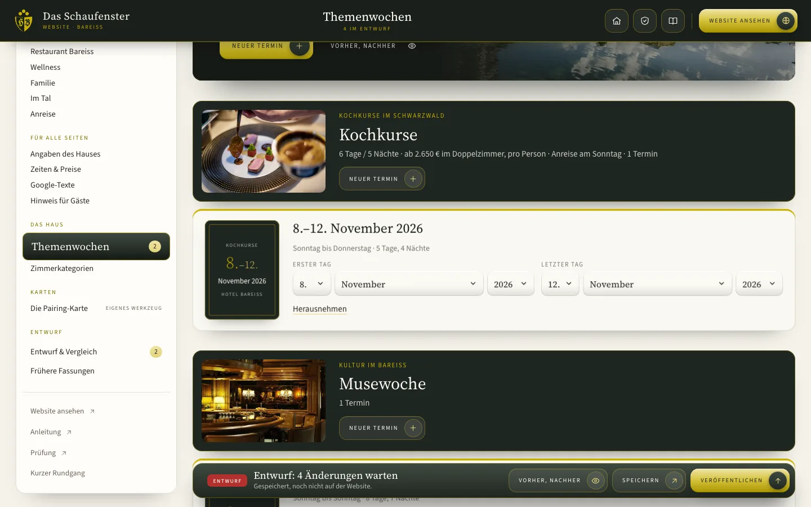
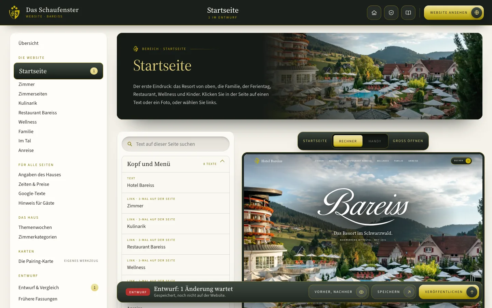
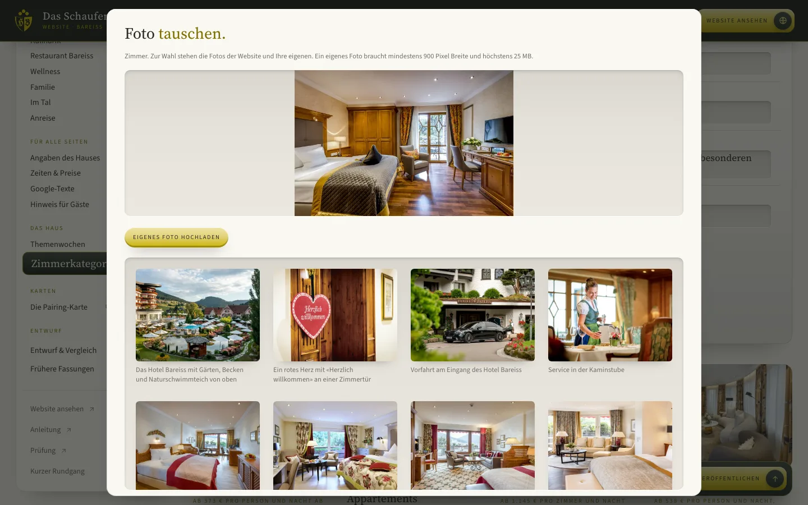
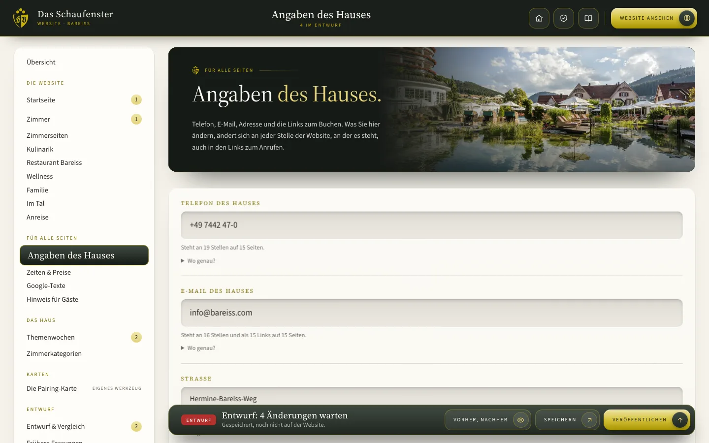
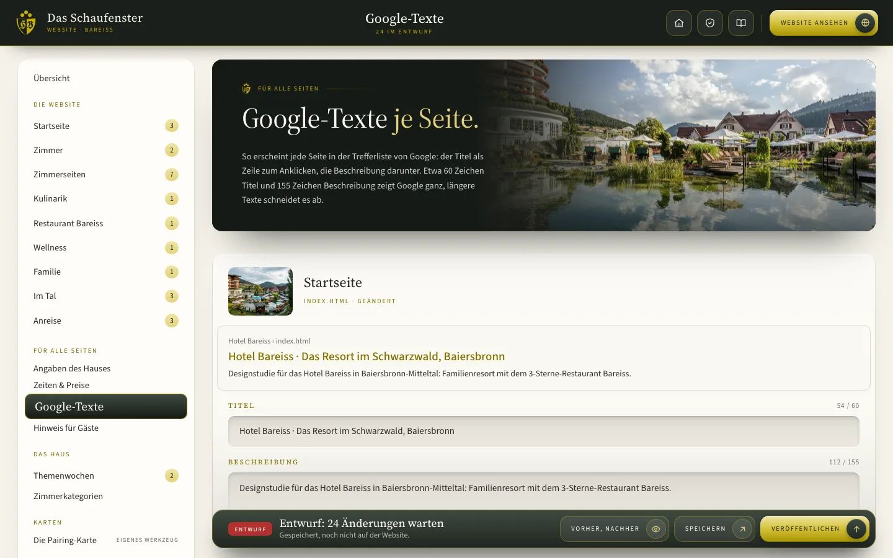
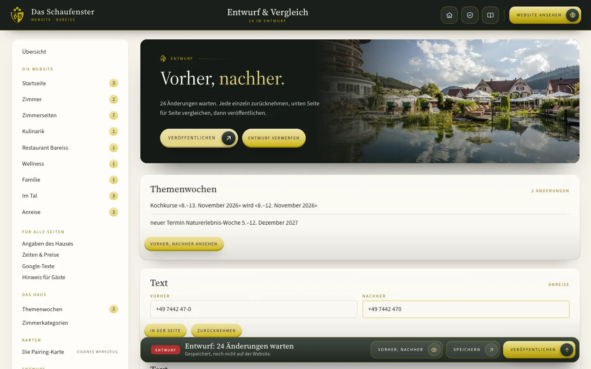
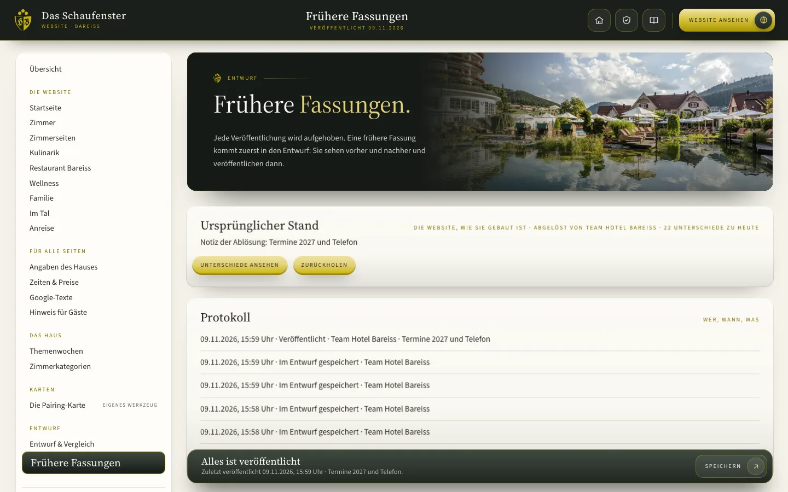

Website pflegen
So pflegen Sie Ihre Website.
Mit «Website pflegen» pflegen Sie die Website des Hotel Bareiss selbst. Jeder Text, jedes Foto, die Zimmerkategorien, die Termine der Themenwochen, Telefon, E-Mail, Adresse und die Texte für Google lassen sich hier ändern. Nichts geht von selbst online: Was Sie speichern, wartet im Entwurf, bis Sie es veröffentlichen. Jeder frühere Stand lässt sich zurückholen.
1
Die Übersicht
Oben sehen Sie, ob etwas im Entwurf wartet und wann die Website zuletzt veröffentlicht wurde. Darunter «Häufig gebraucht»: die Aufgaben, die im Alltag am meisten vorkommen. Ganz unten jeder Bereich der Website mit einem Foto, von der Startseite über die Zimmer, das Restaurant Bareiss, die Wellness und die Familie bis zur Anreise.
Links im Rand finden Sie dieselben Bereiche, dazu «Angaben des Hauses», «Zeiten & Preise», «Google-Texte», «Hinweis für Gäste», die Zimmerkategorien und die Themenwochen. Am Handy öffnet «Bereiche» oben den Rand.

2
Die Zimmerkategorien
Unter «Zimmerkategorien» steht jede Kategorie der Seite «Zimmer», vom Einzelzimmer bis zum Wohnen im Landhaus, mit Name, Lagen, Leitsatz, Preis, dem Link zu ihrer eigenen Seite und den Fotos. Ein Klick auf einen Eintrag öffnet seine Felder, die Seite daneben schreibt mit.
Wird eine Kategorie nicht mehr angeboten, blenden Sie den Eintrag aus, statt ihn zu löschen. «Wieder zeigen» holt sie zurück. Die einzelnen Zimmer mit Ausstattung und Grundriss pflegen Sie im Bereich «Zimmerseiten».

3
Die Themenwochen
Unter «Themenwochen» stehen die Arrangements des Hauses mit festen Terminen: Naturerlebnis-Woche, Jubilarwochen, Kochkurse und Musewoche, je mit Foto, Dauer und Preis, darunter jeder Termin mit erstem und letztem Tag. «Neuer Termin» schlägt dieselben Wochentage vier Wochen nach dem letzten Termin vor.
Verschieben Sie einen Termin, wählen Sie Tag, Monat und Jahr neu. Vergangene Termine tragen «Vorbei»; «Herausnehmen» nimmt sie heraus, jeder veröffentlichte Stand lässt sich zurückholen. Darunter steht jede Themenwoche in einer Zeile, so wie das Haus die Termine bei seinen Arrangements setzt. Leistungen und Preise bleiben, wie das Haus sie schreibt.

4
Einen Text ändern
Bereich wählen, zum Beispiel «Startseite». Rechts steht die Seite, wie die Gäste sie sehen. Klicken Sie auf den Text, den Sie ändern möchten: links öffnet sich das Feld, die Seite rechts schreibt beim Tippen mit.
Steht derselbe Text auf mehreren Seiten, bietet das Feld «An allen … Stellen ändern». «Wie ursprünglich» holt den gebauten Text zurück. Statt etwas zu löschen, lässt sich ein ganzer Abschnitt ausblenden und später «Wieder zeigen».

5
Foto tauschen oder eigenes Foto hochladen
Klicken Sie in der Seite auf ein Foto. Zur Wahl stehen alle Fotos der Website. Mit «Eigenes Foto hochladen» kommt ein neues dazu: mindestens 900 Pixel breit, höchstens 25 MB, im Format JPG, PNG oder WebP. Das Werkzeug setzt es in vier Größen für Rechner und Handy.
Die Bildbeschreibung darunter lesen Vorlesegeräte und Suchmaschinen. Ein Satz, was auf dem Foto zu sehen ist.

6
Telefon, E-Mail und Adresse
Unter «Angaben des Hauses» steht jede Angabe, die auf vielen Seiten vorkommt, mit dem Hinweis, wie oft und auf wie vielen Seiten. Sie ändern sie einmal, und sie ist überall neu, auch im Link zum Anrufen am Handy. Dazu die beiden Links zum Buchen: Zimmer und Gutscheine.
Die Zeiten und die Preise im Text, etwa die Preise der Zimmer oder die Zeiten des Kulinarischen Ferientags, finden Sie unter «Zeiten & Preise». Das Menu des Restaurants Bareiss pflegen Sie in «Karten».

7
Google-Texte
Für jede Seite ein Titel und eine Beschreibung, so wie sie in der Trefferliste von Google erscheinen. Die Vorschau darüber zeigt es beim Tippen. Etwa 60 Zeichen Titel und 155 Zeichen Beschreibung zeigt Google ganz, die Zahl wird hervorgehoben, wenn es länger wird.

8
Speichern und auf die Website bringen
Solange etwas nicht gespeichert ist, steht unten «Eingaben noch nicht gespeichert» und der Knopf «Speichern» leuchtet. Nach dem Speichern erscheint eine Quittung mit «Vorher/nachher ansehen» und «Rückgängig». Tastenkürzel: Cmd + S am Mac, Strg + S unter Windows.
«Vorher, nachher» zeigt jede Änderung mit dem alten und dem neuen Wortlaut, einzeln zurücknehmbar. «Veröffentlichen» bringt den Entwurf auf die Website, Texte, Fotos und Themenwochen zusammen, mit einer kurzen Notiz für die früheren Fassungen.

9
Einen früheren Stand zurückholen
Unter «Frühere Fassungen» steht jede Veröffentlichung mit Datum und Notiz. «Zurückholen» legt sie in den Entwurf. Auf die Website kommt sie erst, wenn Sie wieder veröffentlichen. Die Themenwochen haben ihre früheren Fassungen in ihrer Ansicht, ganz unten.

10
Wenn etwas nicht klappt
Jede Meldung trägt den Knopf «Was tun?». Er führt zur Prüfung: Sie läuft auch dann, wenn das Werkzeug selbst nicht startet, sagt, was los ist, und was zu tun ist. Gespeichertes geht dabei nie verloren.